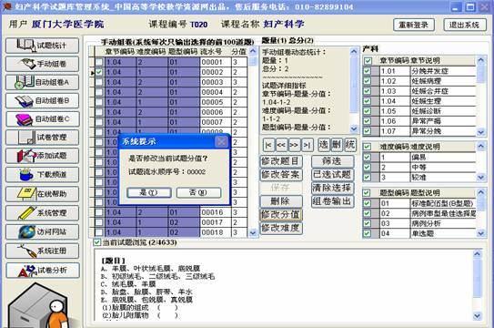

操作说明（附编码规范）
一、系统运行环境及安装
1.1 系统环境要求
(1) 硬件要求
计算机：CPU PII 300以上
内存 推荐256M 以上，最少128M
硬盘 推荐10G以上，最少1G
(2) 软件要求
Windows 98、windows me、Windows 2000、windows xp、IE5.0以上、office xp
1.2 系统安装过程如下：
(1) 运行光盘中的stk.exe安装文件。出现如图1所示窗口。
图1
(2) 选择路径进行安装，若您购买了多个试题库产品，请安装到不同目录中。
（3）打开系统安装文件夹，双击stk.exe（枫叶图标的文件）文件运行系统。
（4）输入用户名及用户口令，进入系统。系统默认的用户名为：admin，口令为：admin888，用户登录系统后可以自行修改。
二、操作使用说明
2.1 试题统计，显示了本题库中，章节题量与分值、难度题量与分值、题型题量与分值，让用户对试题库有整体的了解。
2.2 手动组卷
手动组卷可以满足教师对特定章节特定题型特定难度的试题的组卷要求。系统默认是所有章节难度和题型的试题都被选择的，教师可以根据自己的需要进行勾选。如果想要查看选择的试题是否满足要求，可以点击当前试题浏览，选择所有浏览的章节题目，根据自己的需求对试题进行删除、修改等操作。其中修改功能包括修改题目、修改答案、修改难度、修改分值四项。修改和删除操作的结果在用户重新登录后生效，若您想立即使用修改后的题库，请重新登录试题库系统。
删除操作：如图所示，注意：确定删除以后，库内将不在存有此题。
修改操作：可对原有的试题进行修改。
修改题目：
修改答案：
修改分值：

修改难度：
确认修改后，将自动创建word文档（提示：要求系统安装office xp或以上），在word中编辑修改，修改完成后保存文档，关闭word窗口，对所有提示都选择“是”。返回题库系统平台界面，点击保存按钮，即可完成当前试题的修改工作，若不点击保存，当前试题的修改不会保存到题库中。

2.3 自动组卷A：设定试卷总分值，设定章节的分值、难度分值、题型分值后开始组卷。
在自动组卷A里，如果用户不进行任何的数据输入，那么系统将根据平台里的试题进行随机组卷。
2.4
自动组卷B：设定试卷总分值，设定章节的分值、难度分值、题型题量和分值后开始组卷。
与自动组卷A不同的是，自动组卷A是用平台里最原始的试题分值作为组卷依据，而自动组卷B是根据教师自己设定的题型分值进行组卷，如果教师在这个模块不设分值，那么组卷成功后显示的分值是零分。
2.5 自动组卷C：在自动组卷C里，用户可以对每一章节的各种题型以及分值进行设定。不参加组卷的章节和题型用户不进行数据的输入就可以
自动组卷C默认的是显示全部的章节，如果用户进行组卷时，是以具体章节作为组卷依据，那么输入具体的数据就可以，而对一些特殊的课程可能出现二级目录，如果用户进行组卷时，不是以具体章节为出题依据，而是以篇来组卷，就可以点击显示篇名按钮。
系统默认状态是显示章节时的状态如上图，点击显示篇名后的操作界面如下：
在这里需要说明的是，自动组卷C还支持不同课程之间的联合组卷，当需要几门课程联合组大试卷的时候，系统显示的就是课程以及课程下的具体章节的名称。
2.6 试卷管理：
对自动组卷生成的试卷，可以保存，需要时输出。
2.7 添加试题：
添加试题有两种方式，单道试题的添加和批量试题的添加。单道添加试题功能，用户可以在列表里选择章节难度和分值进行试题的添加
批量添加试题功能可以快速的增加用户自定义试题，只要用户按照我们的word文档编码规范对自己的试题加上编码，就可轻松入库，该项操作开始可能不熟练，可以咨询我们的技术服务人员，也可将文档发给我们协助编码，一两次后，就会得心应手。
2.8 下载试题：
注册用户可以通过这里下载用户已经购买过的试题库产品的升级版或相关产品介绍。
2.9 在线帮助：
本帮助文档
2.10 系统管理：
修改用户帐号和密码
2.11 访问网站：
访问www.cctr.net.cn网站内容
2.12 系统注册：
默认情况下，我们已经为购买正式产品的用户完成注册，请用户妥善记录自己的注册码，系统升级时有用。
试题库管理系统编码白皮书4.0
一、文字处理软件的要求
office xp以上版本
二、文档格式要求：
1、字体和段落设置
[1]在字体中不要设置字符间距，要增加字符间距，使用空格。
[2]在段落设置中不要设置段前、段后及行间距，这些功能使用回车完成。
[3]下划线用字符型划线“_”，使用“shift+-”键配合完成，不要使用绘图的划线和字体中的划线功能。
2、文本框、图形设置
[1]一定选择“嵌入型”，不能选择其它方式。
[2]Word2000的文本框不支持“嵌入型”，可以拷贝屏幕，当图片处理，设置成“嵌入型”。Word xp和word2003能很好的支持“嵌入型”。
3、表格的使用
因为各题、每题的题目和答案都要拆分，所以不要跨题目和跨题目和答案部分使用同一表格，这样的情况可以各自使用独立的表格
4、系统的保留符号
”|”符号用来分隔编号，不限制在题目内容中使用，半角的”~~”和”^^”是系统的保留符号，用来做文档拆分。
三、文档的编码要求：
1、题库文档的标准标记为如下例所示。
~~XX|XX|X|XX //题目类型|章节|难度|分值
注释内容 //从编码结束开始到第一个^都是注释内容，比如说题号，不入库
^^题目内容 //第一个^^之后为题目内容，不能省略
^^答案 //省略第二个^^表示没有答案部分
~~XX|XX|X|XX //题目类型|章节|难度|分值
^^题目内容
^^答案
2、注意事项：
[1] ~~标号必须单独占有一行，每题的编码行结束后要加回车。
[2] ^^后要紧跟题目和答案内容
四、临床妇产科学试题库文档编码举例
~~04|1.01|1|1
^^关于子宫破裂，正确的是 ( )
A、均发生于妊娠期
B、均发生于分娩期
C、先兆子宫破裂见于宫缩乏力所致产程延长者
D、对于子宫破裂者，在纠正休克的同时，应尽早行子宫全切术
E、破裂的过程一般分为先兆破裂和破裂两个阶段
^^E
~~04|1.01|1|1
^^胎盘功能检查方法除外 ( )
A、尿雌三醇测定
B、尿雌激素/肌酐(E/C)比值
C、羊水脂肪细胞出现率
D、血清胎盘泌乳素值
E、缩宫素激惹试验
^^C
~~05|1.02|1|2
^^关于羊水过多的病因有 ( )
A、胎儿神经管缺陷性疾病
B、多胎妊娠
C、糖尿病
D、胎儿消化道畸形
E、肾缺如
^^ABCD